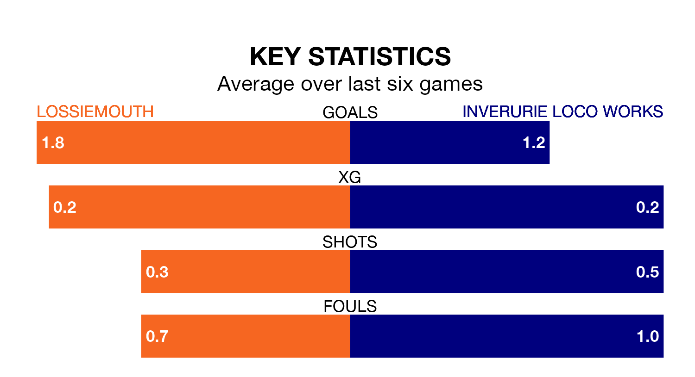

Highland and Lowland Football Leagues's top two sides face each other at Grant Park in Wednesday's late kick-off, when zero-placed Lossiemouth host zero-placed Inverurie Loco Works.
Lossiemouth have picked up four wins and two draws from 13 games so far this season, and sit one point above the visitors going into the 8pm match.
Inverurie Loco Works, meanwhile, have won four and drawn one of 15, picking up 13 points.
With 18 goals in 15 games so far this season, Inverurie Loco Works are the league's joint--6th-lowest scorers with 1.2 goals per game. And they are conceding more than average, letting in 31 goals at a rate of 2.1 per game.
Lossiemouth are also below average scorers, with 1.3 goals per game, compared to a league average of 1.7. They have conceded 1.7 goals per game.
In the last five years, Lossiemouth and Inverurie Loco Works have played each other on four occasions. Lossiemouth won one of them and Inverurie Loco Works the other.
On average, Lossiemouth scored 1.0 goal and Inverurie Loco Works 3.0 in those matches.
Their last meeting was on February 4, when Lossiemouth won 1-0 at home.
The hosts are in reasonable form in Highland and Lowland Football Leagues, with four wins and two losses from their last six games.
With three wins and three losses over that period, the away side's form is worse – they have taken nine points from 18, compared to Lossiemouth's 12.
Lossiemouth's last match was on November 25, a 5-2 win against Clachnacuddin, with Ryan Stuart (two), Liam Archibald, Ross Morrison and Ryan Farquhar getting the goals for Lossiemouth.
Inverurie Loco Works beat Deveronvale 3-0 last time out, also on November 25, with Myles Gaffney (two) and Nathan Meres on the scoresheet.
